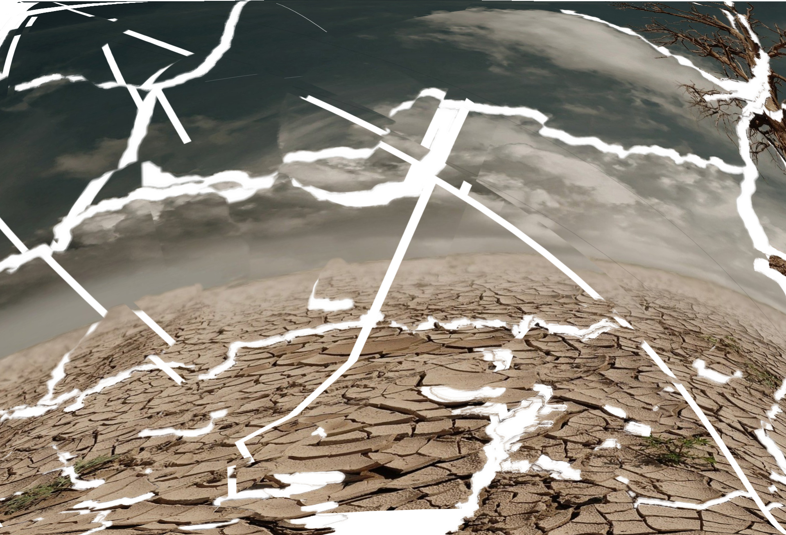
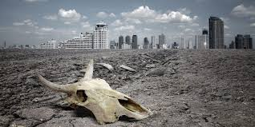
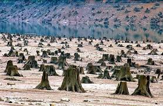
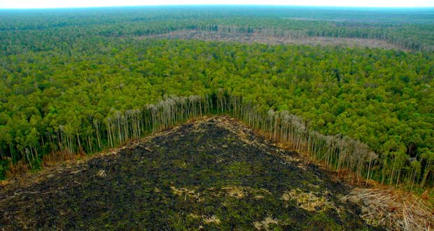
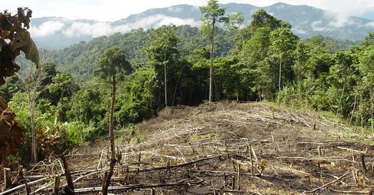

Todo lo que le ocurra a la tierra, le ocurrirá a los hijos de la tierra
Jefe indio Seattle

Que es?? |
La pérdida del hábitat y el umbral de extinción |
|---|---|
|
La fragmentación de hábitat es un proceso de cambios ambientales importante para la evolución y la biología de la conservación. Usualmente es definida como aquel proceso en el cual una gran extensión de hábitat es transformada en un número de parches más pequeños que se encuentran aislados entre sí por una matriz con propiedades diferentes a la del hábitat original. El paisaje se fragmenta de forma progresiva, aumentando el contacto entre los parches y la matriz. Dado que los límites entre ambos no son tajantes, en las regiones de contacto se establece una transición denominada borde cuya extensión estará determinada principalmente por las propiedades de la matriz. En consecuencia, la proporción de hábitat que permanece relativamente intacta es una función compleja entre la forma y el tamaño de los parches, y la naturaleza de la matriz . No obstante, la fragmentación es un proceso que trasciende la interacción parche-matriz, teniendo implicaciones a nivel ambiental. De hecho, para que verdaderamente ocurra es necesario que exista discontinuidad en el paisaje , un atributo que obliga a ampliar a escala regional el estudio del fenómeno.  |
Generalmente el efecto más obvio del proceso de fragmentación es la pérdida de hábitat nativo. Esto ha llevado a muchos investigadores a medir el grado de impacto simplemente como la cantidad de hábitat remanente en el paisaje, ignorando que la fragmentación puede ocurrir de diversas maneras generando patrones espaciales muy diferentes. Lo cierto es que la pérdida de hábitat siempre acompaña la fragmentación del paisaje y es por ello que los índices de fragmentación se correlacionan fuertemente con la proporción de hábitat perdido, sin embargo son fenómenos diferentes que deben ser discernidos .1718 De hecho la fragmentación per se genera impactos importantes en la biodiversidad que son independientes de la pérdida del hábitat .1918 Para entender el proceso de fragmentación del hábitat (que ocurre como consecuencia de la destrucción del mismo) y sus consecuencias en las poblaciones, se obtuvieron mapas generados por modelos aleatorios que muestran que el tamaño y el aislamiento de los parches no varían linealmente con respecto a la cantidad de hábitat perdido .62014 Esto determina que ciertas proporciones de hábitat destruido sean importantes umbrales, más allá de los cuales se acelera la disminución del tamaño y el aumento del aislamiento de los parches, siendo las poblaciones remanentes en los mismos inviables.  |
Que hacer?? |
|---|
|
Resulta injusto exigir que sólo las comunidades rurales se esfuercen en conservar la naturaleza. Para ello se requiere un equilibrio en el bienestar social e igualdad entre las zonas urbanas y las zonas rurales. Se requiere dirigir mayor presupuesto a programas basados en buenos diagnósticos y no sustentados sólo en clientelismo político. ¿Cómo?, Comencemos por conservar la vegetación a orilla de ríos y arroyos y agilizar los apoyos económicos a la reforestación. Durante años los campesinos han padecido de una burocracia brutal y de una serie de lineamientos y requisitos, cuando de hecho, sus comunidades han estado aisladas, sin servicios básicos y sin medios de comunicación. Los apoyos tendrían que ir a donde están dichas comunidades; los campesinos no tendrían que venir a pedirlos. Las áreas naturales están “allá”, pues “allá” deberían estar las oficinas y los funcionarios responsables. Considerando que estamos frente a un desastre natural, ¿acaso no deberíamos implementar verdaderos programas de rescate económico y ecológico para los damnificados sociales y ecológicos? Tal como no bastaría con sólo llevar programas de orientación ante una desgracia por inundación; tampoco basta con implementar programas de educación ambiental. Urge atender a los damnificados en este desastre llamado deforestación y fragmentación del ecosistema.   |
Impacto Ambiental |
|---|
|
El impacto ambiental al medio natural es el efecto que produce la actividad humana sobre el medio ambiente. El concepto puede
extenderse a los efectos de un fenómeno natural catastrófico. Técnicamente, es la alteración en la línea
de base ambiental. La ecología es la ciencia que se encarga de medir este impacto y tratar de minimizarlo.
Las acciones de las personas sobre el medio ambiente siempre provocarán efectos colaterales sobre éste. La
preocupación por los impactos ambientales abarca varios tipos de acciones, como la contaminación de los mares
con petróleo, los desechos de la energía radioactiva o desechos radioactivos/nucleares, la contaminación
auditiva, la emisión de gases nocivos, o la pérdida de superficie de hábitats naturales, entre otros. La
evaluación de impacto ambiental (EIA) es un procedimiento por el que se identifican y evalúan los efectos
de ciertos proyectos sobre el medio físico y social. La Declaración de Impacto Ambiental (DIA) es el documento
oficial que emite el órgano ambiental al final del procedimiento de EIA, que resume los principales puntos
del mismo y concede o deniega la aprobación del proyecto desde el punto de vista ambiental. La identificación
y mitigación de impactos ambientales es el principal objetivo del procedimiento de Evaluación de Impacto
Ambiental. La aplicación de acciones de mitigación, siguiendo la denominada "jerarquía de mitigación", pretende
contrarrestar los efectos negativos de los proyectos sobre el medio ambiente.
|